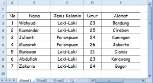
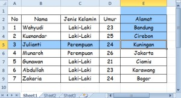
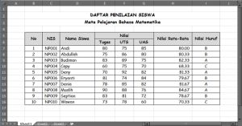
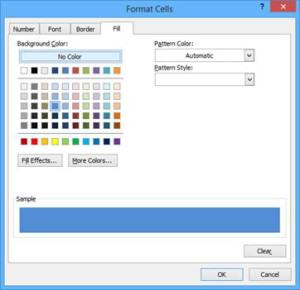
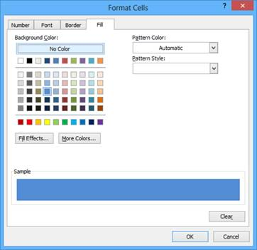

Mewarnai sel dan batas tabel
Warna isian dan garis tepi membuat tabel mudah dibaca. Warna yang berubah otomatis dibahas di Conditional Formatting.
Langkah praktik
- Blok sel yang akan diwarnai.
- Home > Fill Color untuk warna latar, Font Color untuk warna huruf.
- Home > Borders untuk garis tepi.
- Gunakan Format Painter untuk menyalin tampilan ke sel lain.
Tangkapan layar praktik




